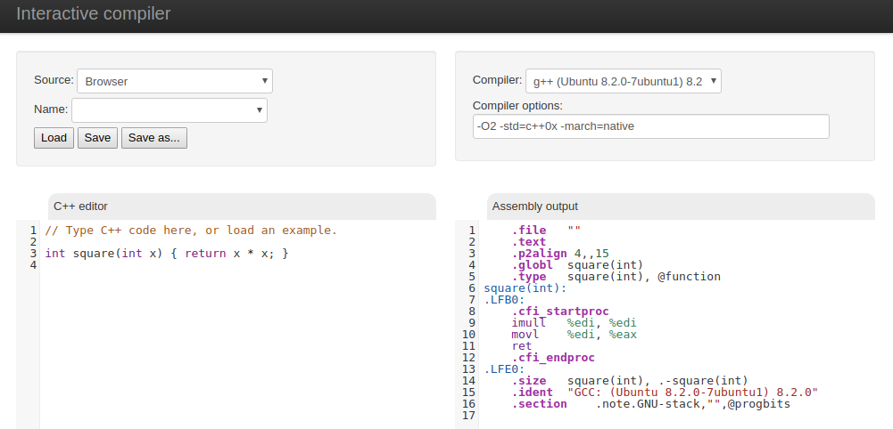

Quick fire questions
What?
Why?
When?
22nd March 2012
2012
- gcc & clang
- C++
- Unfiltered
- 5k lines of JavaScript
- Just me!
- Self-funded
2023
- 2,100+ compilers
- 50+ languages
- Filters, tools, diffs...
- 65k lines of TypeScript
- Amazing team

- Patrons & sponsors
How?

Who?
- Developers
- Trainers
- Universities
- Security Researchers
- Compiler Authors
User Journeys
"Jordan"
- TODO just a photo, no bullet... Trading developer
- Performance is key
Sum over an array
Inlining
LinkWhat we covered
- Basic functionality
- Diff view
- Analysis
- IDE mode
- Templates
"Mason"
- TODO photo no bullets / C++ professor
- YouTube videos
- Demonstrate C++
Teaching
LinkExecution
LinkLinking
LinkStatic Analysis
Link https://godbolt.org/z/cs6f1a8YT Maybe get some clang-tidy ones?What we covered
- Assembly tooltips
- Control flow graph
- Binary tools
- Overrides
- Static Analysers
- Execute only
- Libraries
"Joanna"
- Compiler Developer
void vexing(float f) {
int as_int(int(f));
}
return std::bitset<64>{value}.count();
std accumulate example?
maybe #include <numeric>
#include <span>
int sum(std::span<<const int> array) {
return std::accumulate(begin(array), end(array), 0);
}
What we covered
- AST
- LLVM pass viewer
- Conformance view
"Matt"
- Middle-aged man
- Recapturing his youth
- https://compiler-explorer.com/z/WYYbKGre3
- https://compiler-explorer.com/z/5ac5hY5WT